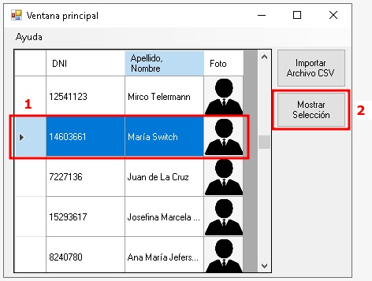
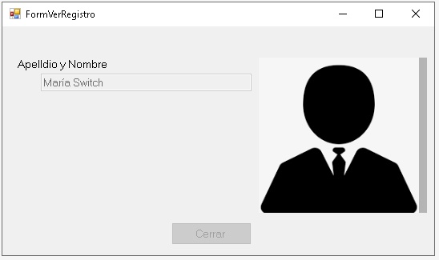

Aquí se describirá el proceso de visualización de la información de un registro de una persona seleccionada.
Para mostrar los datos del usuario seleccionar la fila a mostrar (1) desde la lista de usuarios.
Luego se hace click en Mostrar (2) y lanzará la siguiente ventana:
en esta ventana se puede observar la foto correspondiente al cliente seleccionado.